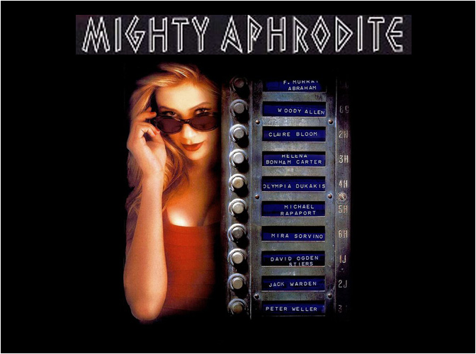
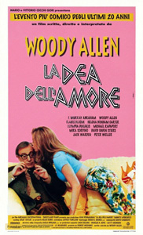
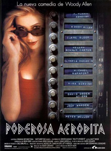
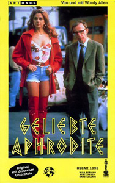

|
||||
Mighty Aphrodite (1995) |
||||
 |
||||
Director |
- |
Woody Allen | ||
Producers |
- |
Letty Aronson Robert Greenhut |
||
Screenplay |
- |
Woody Allen |
||
Cinematography |
- |
Carlo Di Palma | ||
Production Designer |
- |
Santo Loquasto | ||
Costume Designer |
- |
Jeffrey Kurland | ||
Editor |
- |
Susan E. Morse | ||
Cast |
||||
Lenny Weinrib |
- |
Woody Allen | ||
Leslie / Linda Ash |
- |
Mira Sorvino | ||
Amanda Sloan Weinrib |
- |
Helena Bonham Carter | ||
Kevin |
- |
Michael Rapaport | ||
Greek Chorus Leader |
- |
F. Murray Abraham | ||
Jocasta |
- |
Olympia Dukakis | ||
Laius |
- |
David Ogden Stiers | ||
Tiresias |
- |
Jack Warden | ||
Cassandra |
- |
Danielle Ferland | ||
Jerry Bender |
- |
Peter Weller | ||
Mrs. Sloan |
- |
Claire Bloom | ||
Plot |
||||
The film opens on ancient Greek ruins where a chanting Greek chorus introduces and narrates the story of Lenny Weinrib. Lenny is a sportswriter in Manhattan, married to ambitious curator Amanda. The couple decide to adopt a baby, a boy they name Max. Lenny is awed by their son who, it becomes increasingly clear, is a gifted child. Lenny becomes obsessed with learning the identity of Max's biological mother. After a long search, Lenny is disturbed to find that she is a prostitute and part-time porn star, who uses several names but confesses her birth name is Leslie, and she likes "Linda" because it means beautiful in Spanish, so her current porn star name is Linda Ash. Lenny makes an "appointment" to see her at her apartment. Linda is a bit of a ditz with a crude sense of humour and delusions of becoming a stage actress. Lenny does not have intercourse with her but instead urges her to get away from prostitution and start a wholesome life. Linda becomes angry, refunds Lenny's money, and forces him to leave. Lenny, however, is determined to befriend her and improve her life. He first manages to get Linda away from her violent pimp and then attempts to pair Linda with a former boxer, Kevin. They appear to be a well-suited couple until Kevin discovers Linda's background. Meanwhile, Lenny and Amanda have been drifting apart, due to Lenny's obsession with Linda, but also Amanda's career and her affair with her colleague Jerry (Peter Weller). Amanda tells Lenny she wants to explore her relationship with Jerry. Lenny and Linda console each other over their break-ups, and end up finally engaging in intercourse. However, the next day Lenny reconciles with Amanda, and they realize that they are still in love. Linda tries unsuccessfully to get back with Kevin but on the drive back to Manhattan, she sees a helicopter dropping out of the sky. She pulls over and gives the pilot, Don, a ride. It is revealed by the Greek chorus that they will end up married, although Linda is now pregnant with Lenny's child. Some years later, Linda (with her daughter) and Lenny (with Max) meet in a toy store. They both have each other's children but do not realize it. Linda thanks Lenny for everything he did to help her and then leaves Lenny dumbstruck. The film ends with the Greek chorus singing and dancing. |
||||
Filming |
||||
Mira Sorvino mentioned in a 2011 interview that she chose Linda's voice to be high and gravelly since "high voice kind of makes you sound less intellectually gifted, and the gravelly part just added this kind of rough-and-tumble, been-to-the-school-of-hard-knocks element to it." Four weeks into the production, Allen spoke with Sorvino asking if she had ever wondered about using a different voice. Sorvino stated that the voice affected how she approached the character, and that if she changed the voice the character changed. When she pointed out that they were four weeks into the movie Allen said, "Oh, that doesn’t matter. I have it written into my budget that I can reshoot the entire movie if I want." Mira Sorvino auditioned for the part in New York and didn't get it. Woody Allen then went to London to audition some British actresses, and Sorvino showed up again, this time in full costume, and got the part on her second try. In a 2005 interview with Vanity Fair, Woody Allen stated that even after their bitter and much-publicised breakup, he considered casting Mia Farrow as his wife Amanda, saying that he believed she would bs the best actress for the role. In response to this, his casting director Juliet Taylor replied, "What, are you nuts?" One of the only Woody Allen films that differs in its style of credits. Despite the credits being set in the usual Windsor typeface, at the end of the film, they are superimposed on top of the chorus dancing. After the image fades to black, the credits scroll instead of being still. |
||||
Filming Locations |
||||
| Manhattan locations include Bowling Green, Central Park and FAO Schwarz. Additional exteriors were filmed in North Tarrytown and Quogue. The Greek chorus scenes were filmed in the Teatro Greco in Taormina on the island of Sicily. | ||||
Quotes |
||||
"Achilles only had an Achilles heel, I have an entire Achilles body." "I see disaster. I see catastrophe. Worse, I see lawyers!" |
||||
Music |
||||
Neo Minore |
- |
Vasilis Tsitsanis (solo bouzouki) | ||
Manhattan |
- |
Carmen Cavallaro | ||
Penthouse Serenade (When We're Alone) |
- |
Erroll Garner | ||
I've Found a New Baby |
- |
Wilbur de Paris | ||
Take Five |
- |
The Dave Brubeck Quartet | ||
The 'In' Crowd |
- |
Ramsey Lewis | ||
Li'l Darlin' |
- |
The Count Basie Orchestra | ||
Walkin' My Baby Back Home |
- |
Dick Hyman | ||
Horos Tou Sakena |
- |
Giorgos Zambetas (solo bouzouki) | ||
Whispering |
- |
The Benny Goodman Orchestra | ||
You Do Something to Me |
- |
Dick Hyman Chorus | ||
I Hadn't Anyone Till You |
- |
Erroll Garner | ||
When Your Lover Has Gone |
- |
Bert Ambrose and his Orchestra | ||
FAO Schwarz Clock Tower Song |
- |
Bobby Gosh | ||
When You're Smiling |
- |
Dick Hyman Chorus & Orchestra
|
||
Reviews |
||||
"A minor comedy in Allen's work, though Mia Sorvino, who won an Oscar, shines as the prostitute, despite the director's condescending." - Emanuel Levy "Were Mira Sorvino's all-redeeming, possibly best-list-bound performance to melt away, it would immediately be obvious how malnourished this amiably minor effort is." - Mike Clark : USA Today |
||||
Additional Artwork |
||||
   |
||||